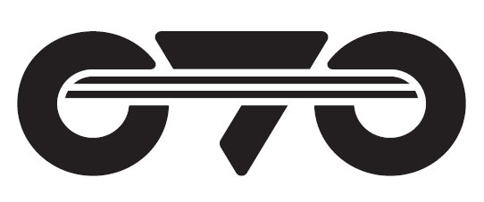
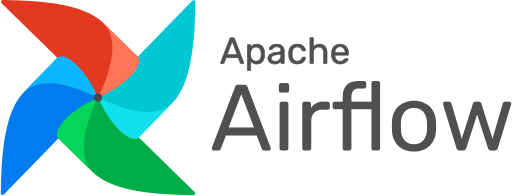

Human
judgement.
AI
leverage.
One
partner.
Xperion places pre-vetted senior specialists on your team in one to two weeks, or runs the work for you as a fully managed pod. Senior-led resource augmentation and managed services, a premium alternative to commodity outsourcing, with AI, consulting, marketing, and design behind every engagement under one MSA.
A KXT Ecosystem Company
Senior teams delivering for Government of Sindh, PalmPay, BYD Mega Motor, COMSATS University, Sapphire, and more, across public sector, fintech, mobility, manufacturing, and education.
 Government of Sindh
Government of Sindh Investment Department, GoS
Investment Department, GoS.png) BYD Mega Motor
BYD Mega Motor PalmPay Pakistan
PalmPay Pakistan.jpg) Sapphire
Sapphire COMSATS University
COMSATS University.png) Stewart Pakistan
Stewart Pakistan Future Technologies
Future Technologies CGD Consulting
CGD Consulting
O7OScaling technology is harder than it should be.
"Xperion exists to eliminate that fragmentation, one partner for the talent, the technology, and the strategic clarity to put them both to work."
Vendor fragmentation
Separate contracts for recruitment, development, strategy, marketing, and design create misalignment and slow delivery at every handoff. The cost lives in the gap between vendors, not in any single line item, which is exactly why it never gets cut.
Endless onboarding
Every new vendor restarts the context clock. Your team wastes cycles explaining what should already be known.
Talent without context
Generic hires fill seats but lack domain fluency. That is the difference between an engineer who ships and one who stalls.
AI without execution
Strategy decks don't ship products. Most firms stop at the roadmap and leave you to execute alone.
The integrated flywheel.
Talent and technology aren't two products we sell. They're one loop. The engineers who staff your team feed our AI builds. The systems we build are run by the people who built them. Context compounds instead of resetting.
Talent that feeds your AI roadmap.
When our embedded engineers identify an opportunity for AI-driven improvement, we mobilise a build engagement without starting from scratch. Your team already understands the problem. We already understand your stack. Context is never lost.
Systems supported by the people who built them.
After we deliver an AI system, we embed the engineers who built it to maintain, optimise, and scale it. No knowledge transfer. No onboarding delay. No fragmentation, just compounding capability over time.
Compounding value, not transactional vendor relationships that reset with every new statement of work.
Resource augmentation and managed services.
The full bench behind them.
This is the core of what we do. We place pre-vetted, senior-led specialists across engineering, data, cloud, design, and marketing on your team in one to two weeks, or run the work for you as a fully managed pod. Behind every engagement sits the rest of the bench, production AI, consulting, marketing, and design, ready under the same MSA. One accountable team, never five vendors.
Resource Augmentation & Managed Services
Pre-vetted, senior-led talent across engineering, data, cloud, design, and marketing, embedded on your team from day one or run as a fully managed pod. Domain-matched, AI-fluent, and accountable, with blended seniority where it serves cost and senior sign-off always.
Explore the practice 02Intelligent AI Solutions
Production-grade AI, agents, LLM & RAG, speech, automation, cloud architecture, engineered with the evals, observability, and operating rigour to run inside the enterprise.
Explore AI Solutions 03Technology Consulting
Strategy that connects to delivery, AI readiness, architecture, transformation, with execution under the same firm.
Explore Consulting 04Marketing
GTM and brand craft, instrumented for revenue, brand, content, demand, lifecycle, ops as one engine. AI-augmented in the workflow, never in the strategy.
Explore MarketingDesign & UX
Product, brand, research, and systems design. Accelerated by AI tooling, never defined by it. WCAG AA as the default, not the ceiling.
Explore Design & UXIndustry-aware, not industry-agnostic.
A fintech engineer is not a healthcare engineer. We staff and build with the domain context your buyers, regulators, and operators actually live with.
Healthcare & Life Sciences
HIPAA-aligned engineering, ambient clinical AI, EHR-fluent integration, and the validation evidence your CISO will actually approve.
Explore →Financial Services & Fintech
AI for risk, fraud, and growth, under SR 11-7, PCI-DSS, and the model-risk governance regimes your CRO actually signs.
Explore →Manufacturing & Logistics
Industrial AI that survives the shop floor, OT/IT-integration-fluent, ISA-95-aware, engineered for edge-to-cloud reality.
Explore →Retail & E-Commerce
Personalization that earns the click, and the return visit. Composable, performance-first, instrumented from cart back to source.
Explore →Enterprise SaaS
Platform engineering that compounds product velocity without compounding tech debt. Multi-tenant by reflex. AI-native, not bolted on.
Explore →The actual stack, not a sales-deck wishlist.
The languages, models, clouds, and tools our engineers work with in client engagements. The list reflects current practice, not aspiration, and the problem always picks the stack.

Airflow KafkaOne model. Four phases. Zero handoffs.
Whether we're staffing, building, advising, marketing, or designing, the cadence, gates, and review artefacts are consistent. Predictable enough to plan around. Rigorous enough that the work compounds.
Discovery
Stakeholder alignment, technical or domain scoping, success-metric definition. Costed proposal in 48 hours of close.
Definition
Validated architecture, role definition, or positioning architecture. Sequenced plan with named decision gates and a signed decision document at close.
Delivery
Agile delivery with continuous visibility, weekly demos, monthly steering reviews. In your tools. Real artefacts, never summary slides.
Optimise
Post-launch optimisation, team scaling, and the second-order improvements that compound across years, not quarters.
What we put in writing.
Four commitments on every engagement, regardless of practice. Miss them, and the engagement structure flexes back to your side of the table.
Four values we hire for, fire for, and operate by.
The shorthand for how we behave with each other, with clients, and with the work, independent of practice or industry.
Senior judgement, not leveraged headcount.
Every engagement is senior-led. Junior capacity is hand-picked, transparent, and works under senior review gates. The senior who scoped your work stays accountable for it.
Outcomes over artefacts.
We measure ourselves against shipped outcomes, code in production, candidates placed, pipeline moved, not decks delivered or hours logged.
Honesty over performance.
We tell clients what we actually think, including when it disagrees with the brief. We push back when a request will hurt the outcome.
Compound, don't reset.
Every engagement is designed to compound. Context is preserved across phases, across practices, and across years. We are uninterested in transactional relationships.
Try one automation, on us.
Pick one workflow that is costing your team time or money. Tell us whether you are optimising for productivity or cost reduction, and we will scope it and run the first automation at no charge, so you can see the result before you commit.
Talk to our team about automationBring us the question.
We'll bring the senior who'll own it.
One scoping call with a Xperion partner, not a salesperson. Within 48 hours: a costed plan, a named team, and a start date. Hybrid coverage across your business hours.